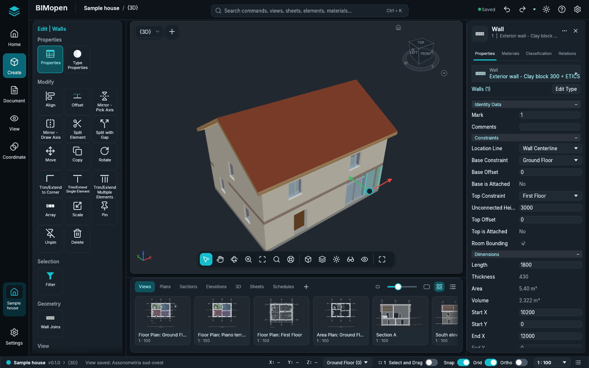

BIMopen user manual
BIMopen is an open-source application for building information modelling (BIM). You model the building with walls, doors, windows, floors, roofs, stairs and rooms, and the drawings come from the model: plans, sections, elevations, 3D views, schedules and sheets are views of the same model and change together when you edit it.
BIMopen runs on the desktop (Linux, Windows, macOS) and in a web browser, and it can be driven from a command line and by AI agents over MCP. Its interface speaks six languages: Italian, English, German, French, Spanish and Arabic, the last one written from right to left.

How this manual is organised
| Chapter | What it covers |
|---|---|
| Getting started | Installing and starting BIMopen, the sample project, and a first small house from an empty project to a sheet |
| The interface | The application menu, the quick access toolbar, the ribbon, the options bar, Properties, the Project Browser, the drawing area, the status bar, the command line and how to move around in the views |
| Projects and files | Opening, saving, exporting and importing projects |
| Selecting and modifying | Selecting elements and the Modify tools |
| Walls, doors and windows | The building envelope and its openings |
| Floors, roofs, stairs and components | Floors, roofs, stairs, railings, curtain walls and placed components |
| Views and graphics | Plans, sections, elevations, 3D views and how they are drawn |
| Annotation and 2D details | Dimensions, text, tags, rooms, areas and 2D details |
| Sheets, schedules and printing | Sheets, schedules, printing and project settings |
| Command line and MCP | Typing commands, bimopen-cli and the MCP server for agents |
| Keyboard shortcuts | Every key and typed shortcut |
| Troubleshooting | What to do when something does not work as expected |
The chapters from Projects and files to Sheets, schedules and printing are being written area by area: each one is completed when the features it describes have been checked one by one through the interface. Until then they list what they will contain.
Conventions
- Names of the interface are written in bold, as they appear on the screen in English: Home tab, Wall button, Properties palette.
- A path through the interface is written with arrows: Home ▸ Build ▸ Wall means the Home tab of the ribbon, its Build panel, its Wall button.
- Keys are written like Ctrl+Z; a shortcut typed at the keyboard, letter by letter, is
written in capitals, like
WA. - Commands typed at the command line, and their output, are written
like this. Points arex,yin metres. - Notes, tips and warnings are set apart:
Note
A note adds something worth knowing.
Tip
A tip shows a quicker or better way.
Warning
A warning tells you about something that can lose work or give a wrong result.
What this manual describes
This manual describes BIMopen as it is today, and only what has been tried in the program. When a feature is not described yet, it may still exist: the roadmap lists what is available and what is planned. The whole manual is also a PDF, one per language: the last entry of the navigation, PDF, downloads it.
BIMopen is free software under the MIT or Apache 2.0 licence. Autodesk and Revit are trademarks of Autodesk, Inc.; BIMopen is an independent project, not affiliated with Autodesk.